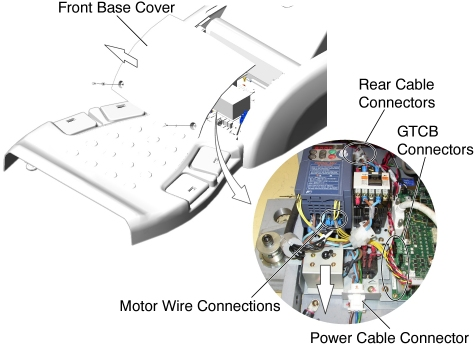

Operating Documentation
Direction 5196839-800, Rev# 6
RT16 and Xtra Service Info Adv
Operating Documentation |
| Required Persons | Preliminary Reqs | Procedure | Finalization |
|---|---|---|---|
| 1 |
| Last Revised: | 03 July 2008 |
| Item | Qty | Effectivity | Part# | Manufacturer | |
|---|---|---|---|---|---|
| Inverter Assembly | 1 | - | 5127381-3 | - | |
Raise the Table to maximum height.
Perform this step depending on the following Table type:
(For Global PET/CT Table, with fixed position IMS) Move the Cradle to OUT limit position.
(For Global PET/CT Table) Move the Cradle and IMS to OUT limit position.
(For GT1700 and GT2000 Table) Move the Cradle and IMS to OUT limit position.
Remove power from Table by turning off 120VAC, Axial Drive and HVDC switches on Service Switch Panel.
Remove the Front Base Cover.
Cut any tie-wraps, and disconnect motor wires (U, V, W) from the front of the Inverter Assy.
Disconnect the following cable connectors:
Power Cable Connector
J1 - on the GTCB Assy
J2 - on the GTCB Assy
J100 - behind the Inverter Assy
J101 - behind the Inverter Assy
J102 - behind the Inverter Assy
Loosen a screw, and slide the Inverter Assy toward the Gantry, then remove it from the Table.
Illustration 1: Inverter Assy Removal

Install the new Inverter Assy in place, and tighten the screw.
Re-connect all wires and cable connectors, and fix the cables using tie-wraps.
Re-install the Table covers.
Power up the Table from the Service Switch Panel.
Verify that the Table Up/Down function is operating normally.